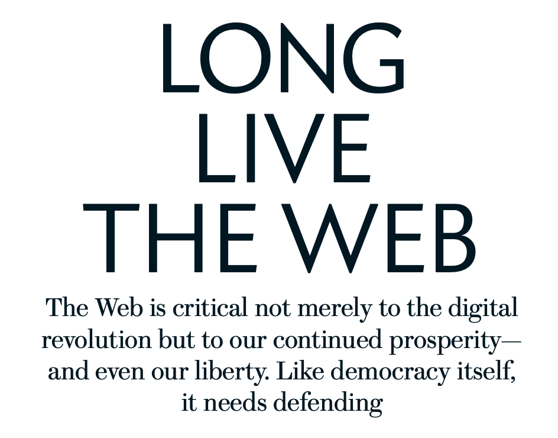

As the beginning of of a technological revolution, Bush talks about what the different inventions and innovations coming forth during his time. From photography to breakthroughs in physics, he imagines what the future of techonology will be. Little did he know something like the web was in his future.
As someone who has grown up with the internet it is hard to imagine a world wihtout it. Berners' article defends that the internet is something we should defend and covet. If it were to ever shut down, the amount of information lost would be detrimental. Not only this, but thanks to the web, we are starting to make huge innovations in the medical world, among infinite other positive things to come out of the internet. Hence, we must keep is safe and available.
